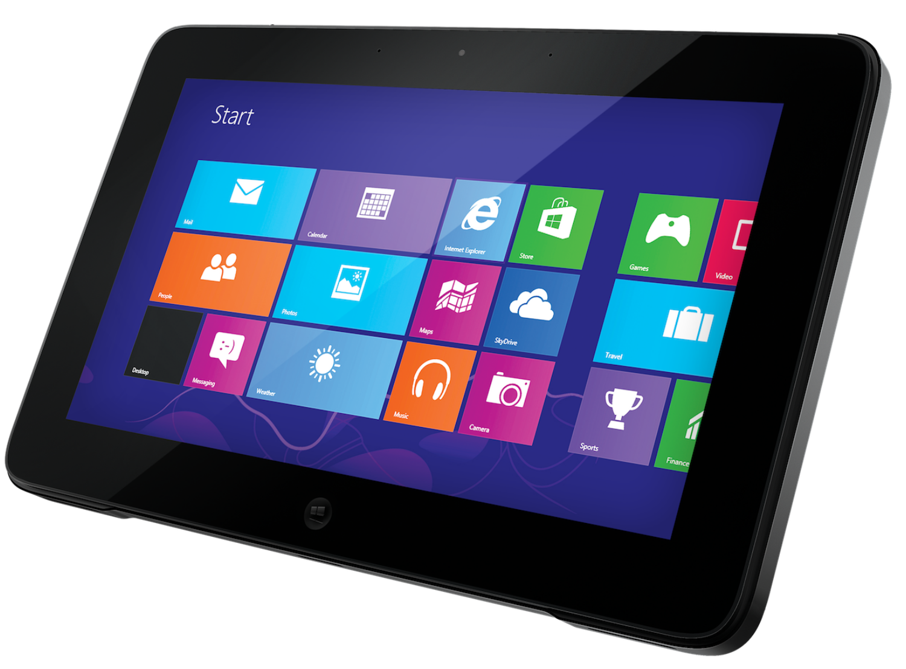

7. Fejezet: Laptopok és egyéb mobileszközök

Mobilitás:
Informatikában a mobilitás azt jelenti, hogy az otthonunktól vagy munkahelyünktől távol is hozzáférünk elektronikus információkhoz. Mobiltelefonos vagy egyéb adatkapcsolat szükséges hozzá. A mobileszközök saját, újratölthető áramforrással rendelkeznek, kicsik és könnyűek.
Az okostelefonok jellemzői:
Az okostelefonok a laptopokkal ellentétben direkt mobileszközökre tervezett operációs rendszereket futtatnak. Kettő tipikus példa a Google Android és az Apple iOS operációs rendszerei. Az operációs rendszer frissítése korlátozott, ha elavul és nem frissíthető, kénytelenek leszünk új telefont venni, ha szeretnénk az új operációs rendszer tudását vagy csak az új operációs rendszeren futó alkalmazásokat igénybe venni. A többi eszköz USB, Bluetooth vagy Wi-Fi kapcsolaton keresztül férhet hozzá a mobilnethez. Nem minden szolgáltató engedi ezt a funkciót.
Tabletek:
A tabletek vagy táblagépek hasonlítanak az okostelefonokra abban, hogy saját operációs rendszert használnak (Android vagy iOS). A legtöbb táblagép azonban a mobilhálózatra nem tud csatlakozni. Ez csak néhány felsőbb kategóriájú eszközben van jelen. A tabletek érintőképernyője nagyobb, mint az okostelefonoké. A képernyő képe élénkebb. Ugyanúgy használhatunk Wi-Fi-t vagy Bluetooth-t és a legtöbbnek USB- és audió-portjai is vannak. Sok tabletben ugyanúgy van GPS-vevő, amellyel helymeghatározást is igénybe vehetünk. A legtöbb telefonos alkalmazás táblagépre is telepíthető.
Laptopok:
A laptopok hordozható számítógépek. Teljes képességű operációs rendszert futtatnak. Rendelkezhetnek ugyanakkora számítási kapacitással és memóriával, mint az asztali gépek. A laptopoknak saját képernyőjük, billentyűzetük és mutatóeszközük (például touchpad) van egybeépítve . A laptopok működhetnek saját akkumulátorukról vagy elektromos hálózatról is. Általában többfajta kapcsolódási lehetőségük van: vezetékes vagy vezeték nélküli Ethernet és Bluetooth.
Alaplapok:
A laptopok kompakt mérete miatt számos belső alkatrésznek kell kis helyen elférnie. A méretkorlát különböző alakú laptop alkatrészeket eredményez, mint az alaplap, a memória, a processzor és a háttértárak. A laptopok belső alkatrészeit a laptopok kis térfogatához tervezik.- RAM
- Processzorok
- SATA-meghajtók
- SSD-meghajtók

Tápellátás:
Az akkumulátor cseréjének szükségességére az alábbi jelekből következtethetünk:- Az akkumulátor nem tartja meg a töltést.
- Az akkumulátor túlmelegszik.
- Az akkumulátor szivárog.

Mobileszközök csatlakozói:
- Mini-USB kábel
- USB-C kábel
- Micro-USB kábel
- Lightning

Vezeték nélküli kapcsolatok és internetmegosztás:
A mobileszközök általában kétféle vezeték nélküli kapcsolódási módot támogatnak- Wi-Fi - A vezeték nélküli hozzáférést helyi Wi-Fi eszköz biztosítja. (1G-5G)
- Mobil adatkapcsolat - A mobilhálózat adótornyok és műholdak sejtszerű hálózatával fedi le az egész világot.
- Hotspot - Hotspotnak nevezzük azt, amikor egy mobileszköz más eszközök számára biztosít internetkapcsolatot

A szinkronizálás bekapcsolása:
- Biztonsági mentés - A biztonsági mentés a felhasználó és az alkalmazások által létrehozott minden adatot elment. Az alkalmazások beállításai, szöveges üzenetek, hangüzenetek és egyéb adatok is másolásra kerülnek.
- Szinkronizálás (Sync) - Hasznos lehet, ha több eszközről is ugyanazokat az információkat tudjuk elérni. Az adatok szinkronizálásával kiküszöbölhető az, hogy a módosításokat folyamatosan, minden eszközön végre kelljen hajtani.


A karbantartás okai:
Az asztali gépeknél sokkal jobban kitesszük őket káros anyagoknak, helyzeteknek; szennyeződés, folyadék, hő, hideg és nedvesség érheti őket. Fontos, hogy tisztán tartsuk a laptopunkat. A megfelelő gondoskodás és karbantartás segítheti az alkatrészek hatékonyabb működését és meghosszabbíthatja a készülék élettartamát.Laptopok megelőző karbantartási terve:
A megelőző karbantartási terv nagyon fontos, és tartalmaznia kell egy rutin karbantartási ütemtervet. A karbantartásnak igazodnia kell a használathoz. A rutin karbantartás a következő alkatrészek havi tisztítását szokta magában foglalni:- Külső burkolat
- Szellőzőnyílások és I/O portok
- Kijelző
- Billentyűzet
- Touchpad
| 1. lépés: A probléma azonosítása | |
|---|---|
| A probléma azonosítása laptopok esetében | |
| Nyílt végű kérdések |
|
| Zárt végű kérdések |
|
| 2. lépés: A lehetséges okok meghatározása | |
|---|---|
| Laptopok problémáinak gyakori okai |
|
| 3. lépés: Az elmélet tesztelése a hiba okának meghatározásához | |
|---|---|
| Gyakori lépések az ok meghatározására laptopok esetében |
|
| 4. lépés: Megoldás tervének elkészítése és megvalósítása | |
|---|---|
| Ha az előző lépésben nem született megoldás, akkor további vizsgálatra van szükség a megoldás megtalálásához |
|
| 5. lépés: A rendszer teljes működésének ellenőrzése, és lehetőség szerint megelőző intézkedések alkalmazása | |
|---|---|
| Ellenőrizzük a megoldást és a laptop teljes működését. |
|
| Ellenőrizzuk a megoldást és a mobileszközök teljes működőképességét. |
|
| 6. lépés: A probléma a megoldási lépések és az eredmények dokumentálása | |
|---|---|
| A probléma, a megoldási lépések és az eredmények dokumentálása |
|
7. fejezet: Összegzés
A laptopok hordozható számítógépek, általában teljes verziójú operációs rendszert futtatnak, az okostelefonok és a tabletek speciális, mobileszközökre írt operációs rendszert használnak.
A laptopok és mobileszközök sokféle vezeték nélküli technológiát használhatnak, beleértve a Bluetooth, az infravörös, a Wi-Fi és a mobilhálózatokhoz kapcsolódás lehetőségét is. A felhasználó bővítheti a laptop memóriáját, használhat flash memóriát a háttértár kapacitását is bővítheti, vagy bővítőkártyákkal plusz funkciókat tehet lehetővé. Néhány mobileszköz háttértárát nagyobbra cserélhetjük, vagy kiegészíthetjük flash memóriával (microSD kártyával).
A fejezet végén megismerkedtünk a laptopok megelőző karbantartásának fontosságával. Végül megtanultuk a hibaelhárítás laptopokra vonatkozó hat lépését.
| Csoport tagjai |
|
|---|